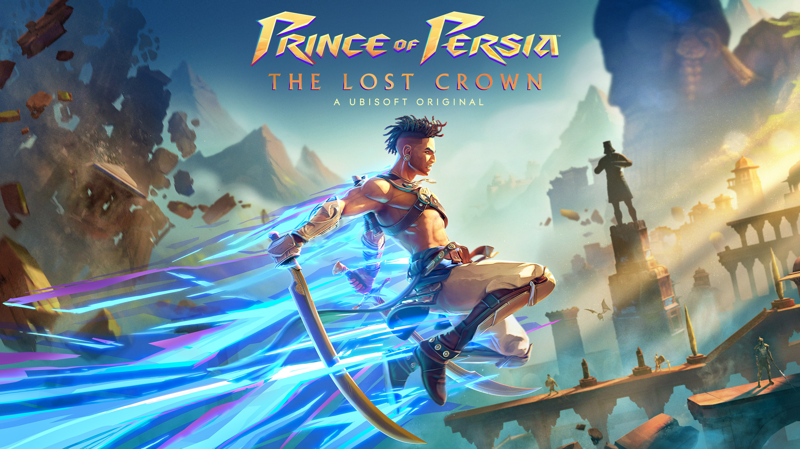
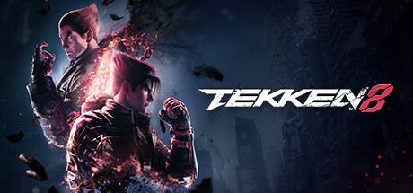

1. Prince of Persia: The Lost Crown

Um dos primeiros destaques de 2024 em games é Prince of Persia: The Lost Crown, da Ubisoft. Situado no fictício Monte Qaf, o título marca o retorno da franquia ao formato de ação 2D, com elementos de metroidvania e “controle sobre os limites do tempo e espaço”.
2. Tekken 8

O novo capítulo da duradoura franquia de jogos de luta da Namco tem 32 lutadores, de velhos conhecidos até novas adições.
O jogo apresenta um novo sistema de batalha, o Heat, que recompensa você por adotar um estilo de luta ofensivo e agressivo. Além da campanha, que conta mais um capítulo envolvendo as famílias Mishima e Kazama, estão confirmados para Tekken 8 o novo modo Arcade Quest e o retorno do mini-game Tekken Ball.
3. Persona 3 Reload

Esse RPG do P-Studio publicado pela Sega é um remake de Persona 3, título de 2006. O título está em desenvolvimento desde 2019 e mantém a história original, porém promete uma série de melhorias gráficas e adições na jogabilidade, além de um novo tema de batalha.
Persona 3 Reload será lançado em 2 de fevereiro de 2024. O jogo sai para PS5, Xbox Series X|S, PS4, Xbox One e PC, chegando diretamente ao catálogo do Game Pass.
4. Like A Dragon: Infinite Wealth

Novo capítulo da franquia antes conhecida no ocidente como Yakuza, Like A Dragon: Infinite Wealth é na verdade o oitavo título numerado da saga. O protagonista aqui é novamente Ichiban Kasuga, agora em uma saga para encontrar a própria mãe.
Além de misturar um drama épico e bem humorado com fórmulas de exploração em mundo aberto e combates por turnos, a desenvolvedora já confirmou que esse será o jogo mais longo da franquia.
O título chega em 26 de janeiro para PS5, Xbox Series X|S, PC, PS4 e Xbox One.
5. Skull and Bones

Há quem acredite que Skull and Bones, da Ubisoft, nunca veria a luz do dia. Inspirado nas batalhas marítimas de Assassin’s Creed IV: Black Flag, o título começou a ser produzido em 2013 e já passou por diversos adiamentos — além de várias alterações no projeto, incluindo a saída de mais de um diretor criativo.
Atualmente na fase de testes, o jogo promete colocar o jogador na pele de um marujo que passa “de pária a chefe pirata mais temido de todos”.
Skull and Bones será lançado no dia 16 de fevereiro nas plataformas PS5, Xbox Series X|S e PC.